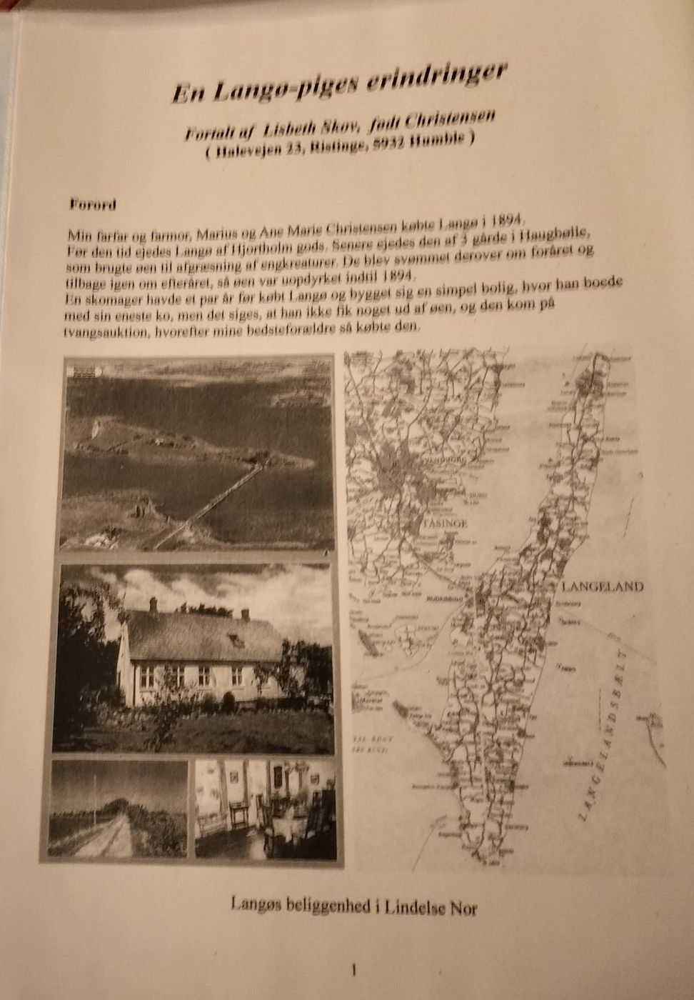

Medie · images_langoe-erindringer.jpg
En Langø-piges erindringer

Lisbeth Skov, født Christensen, barnebarn af Marius og Ane Marie: 'Min farfar og farmor, Marius og Ane Marie Christensen købte Langø i 1894.' Med luftfoto af dæmningen og stuehuset på Langø.